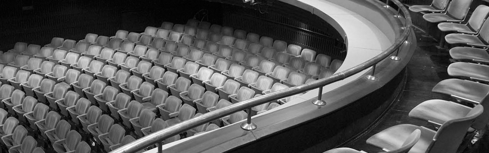
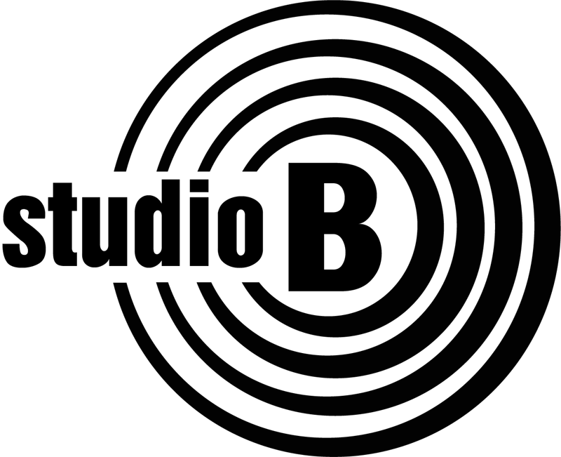

Dokle ćemo trpeti stvari koje ne bismo smeli, dokle ćemo se sklanjati od nasilja, dokle ćemo statirati u rasprodaji ideala naše mladosti? Ovo je priča o mladosti, o nama, o ljudima koji su želeli da žive drugačije. O događajima koji su nas pretekli. Iako godine prolaze, u našim životima poslednjih decenija ništa se suštinski nije promenilo. Mnoge generacije su u međuvremenu odrasle, a sve je ostalo isto.
Pozorište Atelje 212
Svetogorska 21, 11000 Beograd
-

-

- 
Predstave
-

Trst
Najzad, posle toliko godina, iskrena, setno-tužno-tragično-komična priča o velikoj ljubavi prema Trstu, i o velikim ljubavima u Trstu, izvodi na scenu nekoliko generacija kojima je ovaj grad obeležio najvažnije trenutke u životu.
Čitav komad odvija se u hotelu „Savoia“, u centru Trsta, danas, u čijim se luksuznim sobama na različite načine završavaju priče započete u tom gradu pre mnogo decenija. -

Plodni dani
Predstava PLODNI DANI govori o roditeljskom instinktu i o tome šta se dešava kada se čovek nađe razapet između svog neostvarenog roditeljskog instinkta, između očekivanja okoline i neke često neobjašnjive nemogućnosti da se kao roditelj ostvari.
Danas kada roditelj više ne mora da bude i biološki roditelj, kada dete može da bude napravljeno od genetskog materijala nekih potpuno nepoznatih ljudi, kada i genetika ...
-
Plodni dani
Predstava PLODNI DANI govori o roditeljskom instinktu i o tome šta se dešava kada se čovek nađe razapet između svog neostvarenog roditeljskog instinkta, između očekivanja okoline i neke često neobjašnjive nemogućnosti da se kao roditelj ostvari.
Danas kada roditelj više ne mora da bude i biološki roditelj, kada dete može da bude napravljeno od genetskog materijala nekih potpuno nepoznatih ljudi, kada i genetika ... -

Dokle
Dokle ćemo trpeti stvari koje ne bismo smeli, dokle ćemo se sklanjati od nasilja, dokle ćemo statirati u rasprodaji ideala naše mladosti? Ovo je priča o mladosti, o nama, o ljudima koji su želeli da žive drugačije. O događajima koji su nas pretekli. Iako godine prolaze, u našim životima poslednjih decenija ništa se suštinski nije promenilo. Mnoge generacije su u međuvremenu odrasle, a sve je ostalo isto.
-
Trst
Najzad, posle toliko godina, iskrena, setno-tužno-tragično-komična priča o velikoj ljubavi prema Trstu, i o velikim ljubavima u Trstu, izvodi na scenu nekoliko generacija kojima je ovaj grad obeležio najvažnije trenutke u životu.
Čitav komad odvija se u hotelu „Savoia“, u centru Trsta, danas, u čijim se luksuznim sobama na različite načine završavaju priče započete u tom gradu pre mnogo decenija. -
Terapija
Ljudi savremenog doba na sve načine pokušavaju da budu srećni. Previše očekivanja dovodi do brutalnih razočarenja i velikih problema. A najveći problem je što ljudi misle da samo pričom mogu rešiti sve.
Međutim, pričom se ne rešava ništa.
Sponzori
